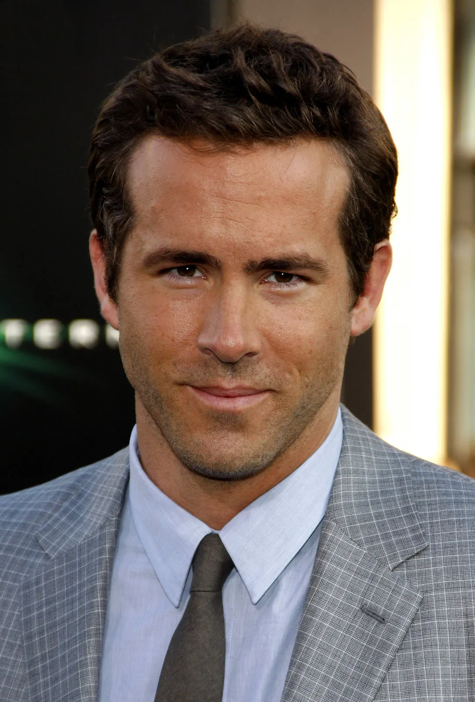
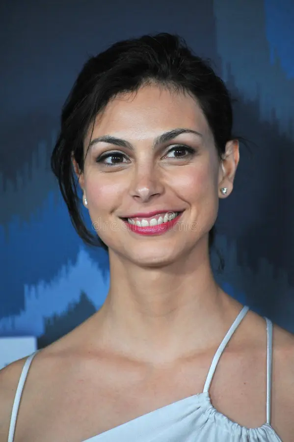

Ryan Reynolds

Interpreta a Wade Wilson / Deadpool. Un mercenario con habilidades regenerativas y un humor ácido.

Interpreta a Wade Wilson / Deadpool. Un mercenario con habilidades regenerativas y un humor ácido.

Interpreta a Vanessa. Es la pareja de Wade y su principal motivación en la historia.
Interpreta a Ajax (Francis Freeman). El villano principal, un científico mutante que no siente dolor.